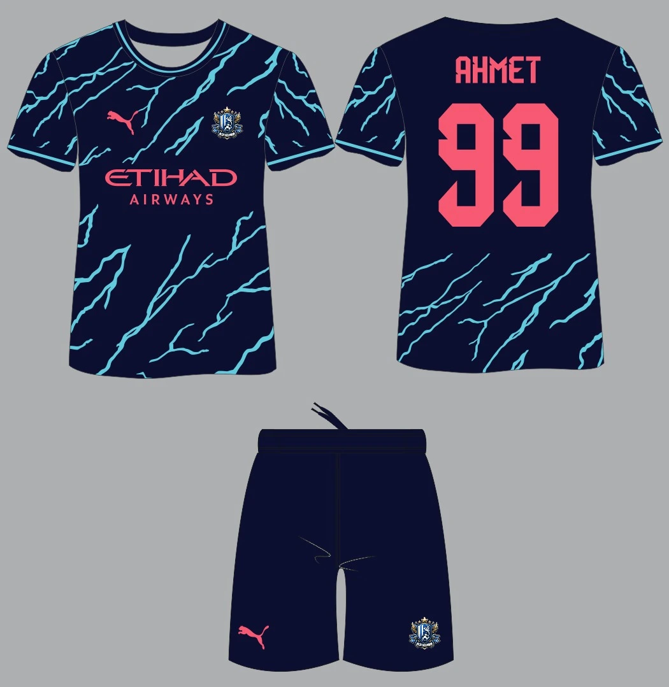

Bruderschaft FC olarak yeni sezona özel hazırladığımız yeni formamızı tanıtmaktan büyük heyecan duyuyoruz! Modern ve enerjik tasarımıyla dikkat çeken bu forma, takımımızın sahadaki dinamizmini ve birlikteliğini yansıtıyor.
Yeni formamızda, deniz mavisi ve gece mavisinin uyumlu birlikteliğiyle oluşturulan şimşek desenleri yer alıyor. Ön yüzde yer alan pembe Puma logosu ve Etihad Airways sponsorluğu, formaya şık bir görünüm kazandırırken, takımımızın armasını gururla taşıyoruz.
Arka yüzde oyuncu isimleri ve numaraları pembe renkte yer alarak formanın şıklığını tamamlıyor. Ahmet'in 99 numaralı formasıyla tanıtılan bu tasarım, hem estetik hem de fonksiyonel açıdan öne çıkıyor.
Yeni sezon formamızı hemen incelemek için web sitemizi ziyaret edebilirsiniz. Bruderschaft FC olarak, taraftarlarımızın desteğiyle sahada daha güçlü ve daha kararlı bir şekilde yer almayı dört gözle bekliyoruz!
Takımımıza ve yeni formamıza gösterdiğiniz ilgi için teşekkür ederiz. Birlikte daha nice başarılara imza atmak dileğiyle!
